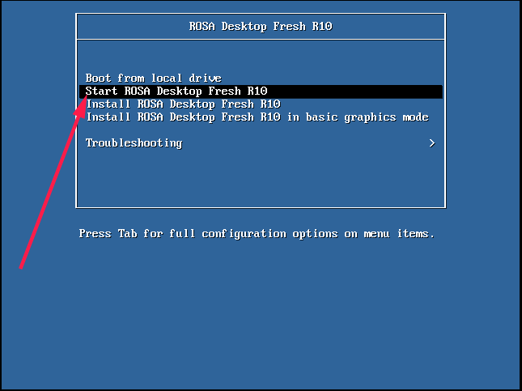

При работе в Linux в качестве единственной ОС на машине рекомендуется устанавливать часы в BIOS по Гринвичу. ОС Miscrosoft Windows по умолчанию считает, что они выставлены по местному времени, поэтому при совместном использовании %distrib% и Windows на одной машине обычно рекомендуется указать в устанвоке %distrib%, что часы устанволены по местному времени, иначе время может сбиваться на дельту с Гринвичем при перезагрузках из одной ОС в другую.
Если оба варианта времени неверные, но в вашем регионе в последнее время не менялся часовой пояс относительно Гринвича, то, вероятнее всего, ваши аппаратные часы идут неправильно, и их нужно установить в настройках BIOS после завершения установки %distrib%, и установленная ОС автоматически подхватит изменения. Если время в вашем регионе подвергалось изменению, то, вероятнее всего, в %distrib% на момент выпуска дистрибутива не успели включить обновленную версию пакета tzdata, и вам в момент установки нужно выбрать правильный вариант и ждать прихода обновлений tzdata через штатные механизмы обновления системы (возможно, сразу после установки).
Установка %distr% (не актуально для систем на базе CentOS) происходит путем «раскатывания» образа на диск, и поэтому часть изменений, внесенных в систему во время работы в Live-режиме в рамках текущего запуска, попадет в то, что будет устанволено на диск/